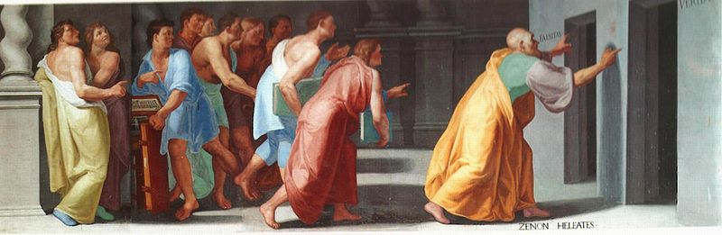

Zeno's Paradoxes

Zeno's paradoxes are a set of problems generally thought to have been devised by Zeno of Elea to support Parmenides's doctrine that "all is one" and that, contrary to the evidence of our senses, the belief in plurality and change is mistaken, and in particular that motion is nothing but an illusion. (Wikipedia)
Achilles and the Tortoise: In a race, the quickest runner can never overtake the slowest, since the pursuer must first reach the point whence the pursued started. —Aristotle, Physics
Interpretation: Therefore the slower must always hold a lead.
The Dichotomy Paradox: That which is in locomotion must arrive at the half-way stage before it arrives at the goal. —Aristotle, Physics
Interpretation: Therefore a body in motion will never reach its destination.
Solution: There is no 'paradox.' All of Zeno's so-called paradoxes are based on an illusion, the theoretical construct, that time is divisible. Time is real, existential and dynamic. The spatio-temporal world is an indivisible unity.